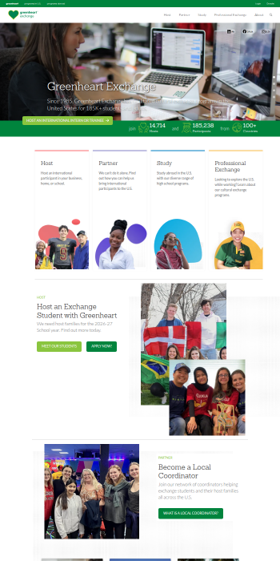
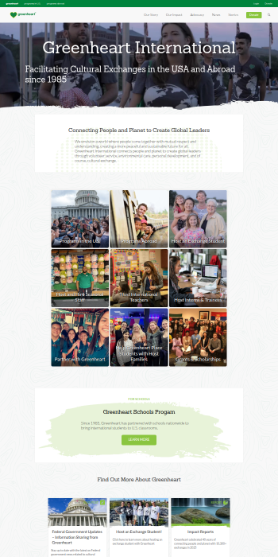
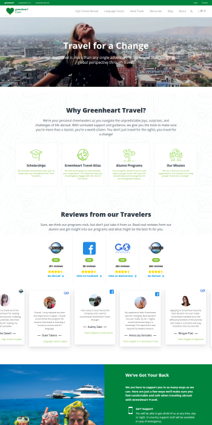

Website Manual
Greenheart Documentation
How to manage content on the Greenheart Exchange, Greenheart International and Greenheart Travel websites.
1Introduction
Welcome to the Greenheart website manual. It covers all three Greenheart websites. They share a theme and an editor, but each site has its own content types and blocks.
The Three Sites
| Preview | Site | Used for |
|---|---|---|
 | Exchange greenheartexchange.org | Inbound cultural exchange. Greenheart sponsors visas for international participants coming to the US: high school exchange, professional development (Teach USA), and intern & trainee (CAP) programs. |
 | International greenheart.org | The organization's main site: press, events and careers |
 | Travel greenhearttravel.org | Outbound cultural exchange for US participants going abroad: high school abroad, language camps, a job board for teaching English abroad, and other programs. |
Using This Manual
The manual is organized by task. Instructions such as Adding a Page are written once, because the editor works the same on every site. Anything that differs by site has a badge:
Exchange International Travel All sites
Use the Showing menu at the top of the page to pick your site. Content types, blocks and features from the other sites will be hidden. The setting is remembered, and you can share a link to a filtered view (for example ?site=travel).
Getting Access
Each site has its own login, so you need a separate account for each site you edit. Sign in with your username or email address on the site's login page:
| Site | Login page |
|---|---|
| Exchange | greenheartexchange.org/wp-login.php |
| International | greenheart.org/wp-login.php |
| Travel | greenhearttravel.org/wp-login.php |
Need an account, or access to another site? Contact the site administrator through the Web Issue Form. Say which site or sites you need, and what you'll be working on.
Bookmark the login page for each site you edit.
Resetting Your Password
Each site has its own password, so a reset only changes the password for that site.
- Go to the site's login page and click Lost your password? below the login form.
- Enter your username or the email address on your account, then click Get New Password.
- Check your email for a message with a password reset link. If it doesn't arrive within a few minutes, check your spam or junk folder.
- Click the link in the email and enter a new password. Use a strong password: WordPress shows a strength meter as you type.
- Click Save Password, then sign in with your new password.
Reset links can only be used once and expire after 24 hours. If yours has expired, start again from step 1.
If the reset email never arrives, or your account is locked, contact the site administrator through the Web Issue Form.
User Roles
What you can do on a site depends on your role. Most people will have one of these two:
| Role | Can | Can't |
|---|---|---|
| Greenheart Editor | See and edit all content types: pages, posts and every custom type | Change theme settings, menus or widgets |
| Greenheart Admin | Everything an Editor can do, plus theme settings, menus and widgets | Manage redirects, security settings, or add and update plugins and themes |
Anything outside your role can be requested through the Web Issue Form.
Conventions Used
Menu paths look like Pages › Add New. Field names and values you type look like this.
Tips point out shortcuts and best practices.
Cautions point out actions that are hard to undo or that affect the live site.
2Content Types
A content type is a kind of content, such as a page, a news item or a program. Each site has its own custom content types, but all of them use the standard block editor. The steps in Adding & Editing Content apply to every type.
Most custom types are in the Greenheart Content menu (heart icon) in the admin. Some have their own top-level menu item; each entry below says where to find it.
Greenheart Exchange
News Items
News and announcements.
- Admin menu
- Greenheart Content › News Items
- Filters
- Categories, Tags
Teach USA Positions
Open US school positions for Teach USA, the professional development program for international teachers.
- Admin menu
- Greenheart Content › Teach USA Positions
- Filters
- Subject, State, Grade level, School type
- Related block
- Teach USA Positions
CAP Positions
US host positions for the intern & trainee program.
- Admin menu
- Greenheart Content › CAP Positions
- Filters
- Industries, State, Compensation, Training focus, Duration, Season
- Related block
- CAP Positions
CAP Profiles
Profiles of US host organizations in the intern & trainee program.
- Admin menu
- Greenheart Content › CAP Profiles
- Filters
- Industries, Country
Students
Profiles of incoming high school exchange students, shown to prospective US host families.
- Admin menu
- Students (top-level menu)
- Filters
- Gender, Country, Age, Season, Interests, Diet, Allergies
- Related block
- Meet Our Students
Greenheart International
Press
Press releases and news. The archive page at /press/ has an editable intro.
- Admin menu
- Greenheart Content › Press
- Web address
/press/- Filters
- Categories, Tags
Events
Upcoming and past events.
- Admin menu
- Greenheart Content › Events
- Web address
/event/…, listing at/events/- Filters
- Categories
Careers
Job openings at Greenheart. Careers don't have a featured image.
- Admin menu
- Greenheart Content › Careers
- Web address
/career/…, listing at/careers/
Greenheart Travel
Programs
Individual outbound programs, such as high school abroad and language camps. A program's web address is built from its Who and What categories, so set both before you publish.
- Admin menu
- Programs (top-level menu)
- Web address
/program/{who}/{what}/…- Filters
- Who, What, Where, How Long, When
- Related block
- Programs Query
Category Landing Pages
Landing pages for groups of programs.
- Admin menu
- Greenheart Content › Category Landing Pages
- Web address
/programs/…
Program Thank You Pages
Pages shown after someone submits a program inquiry or application.
- Admin menu
- Greenheart Content › Program Thankyou Pages
- Web address
/programs/…
Jobs
Teaching English abroad positions, listed on the Travel job board.
- Admin menu
- Greenheart Content › Jobs
- Web address
/jobs/- Filters
- Where, Job type, Job category, Job duration
- Related block
- Greenheart Job Board
3Adding & Editing Content
These steps work the same on every site and for every content type. The only difference between types is which settings appear in the sidebar.
The Block Editor at a Glance
The editor has three areas:
- Top toolbar: add blocks (+), undo/redo, preview, save and publish.
- Canvas: the content itself, built from blocks.
- Settings sidebar: has two tabs. The content tab (Page, Post, Program and so on) holds the status, featured image, excerpt and filters. The Block tab holds settings for the block you've selected.
Adding a Page
- In the admin menu, go to Pages › Add New.
- Enter a title.
- Add content with blocks. Start with a Greenheart Section block to get the standard page layout.
- To nest the page under another one, choose a Parent in the sidebar.
- Click Save draft, then Preview to check it.
- When it's ready, follow Publishing & Scheduling.
Adding Other Content Types
A news item, position, program or any other type is created the same way as a page:
- Find the type in the admin menu. Most are under Greenheart Content; see Content Types for where each one is.
- Click Add New, enter a title and build the content with blocks.
- In the sidebar, fill in the type's settings:
- Featured image: used in listings and cards
- Excerpt: the short summary shown in listings
- Filters, such as State or Industry: control where the item appears in filtered lists (see Categories & Filters)
- Save, preview and publish as usual.
Working with Blocks
To add a block, click + and search by name, or type / followed by the block name in an empty paragraph. To move a block, use the arrows in its toolbar or drag its handle. The List View button in the top toolbar shows the page's block structure, which is useful for selecting blocks nested inside other blocks.
Each site has its own set of Greenheart blocks. If a block mentioned in this manual isn't in the inserter, check the block availability table; that block may not exist on your site.
Images & Media
Upload a new image, or choose one from the Media Library, in any block that has an image field. Always fill in Alt text so that people using screen readers know what the image shows.
Choosing and sizing images
When you upload an image, the site automatically makes several smaller copies of it. Each block picks the copy it needs and crops it to fit. You don't need to make a separate image for every place it appears. Just upload one good image:
- Pick the right orientation. Use a landscape (wide) image where the block shows a wide image, and a square or portrait image for cards and profiles.
- Keep the subject near the middle. Blocks crop from the edges, so keep the important part away from the sides. For square crops, keep faces toward the top.
- Upload at least 900px on the shorter side, so cards and squares stay sharp.
- Upload no more than 2000px on the longer side. Resize larger photos (straight from a camera or phone, for example) before uploading. Bigger files make uploads slow and fill up the Media Library without looking any better.
| Image | Orientation | Recommended size |
|---|---|---|
| Page headers and full-width backgrounds | Landscape | 2000px wide |
| Cards, profiles and featured images | Square or portrait | At least 900 × 900 |
| Images in content and image-and-text blocks | Landscape (16:9 works well) | At least 900px wide |
On International, page headers are cropped to a wide banner (about 3 : 1). Keep the subject in the vertical middle of the photo so it isn't cut off.
File types
JPG, PNG, WebP and GIF are all fine.
Only upload SVG files (icons and logos) that you've used before and know come from Greenheart. Never download an SVG from the internet and upload it. An SVG file can contain hidden code that runs on the site.
Categories & Filters
Many content types have filters, such as State for Teach USA Positions or Where for Travel programs. Filters control where content appears in filtered listings and search, so fill in every filter that applies before you publish.
Publishing & Scheduling
Click Publish to make content live right away. To publish later, change the publish date in the sidebar, then click Schedule.
Changes to published content appear on the live site as soon as you click Update.
Revisions & Restoring
For content types that keep revisions, every save stores a copy. Open Revisions in the sidebar to compare versions or restore an earlier one.
Revisions are kept for Pages, Posts and Travel Programs. The other custom types don't keep revisions, so changes to them can't be undone after you click Update.
4Block Library
These are the Greenheart custom blocks, grouped by purpose. Each site has a different set. Badges show where a block is available, and the table below shows all of them at once. You can use any block on any content type.
Block Availability
✓ means the block is available on that site.
Layout & Structure
Greenheart Section
The main wrapper for a band of page content. Sets the background and spacing. Most pages are a stack of sections.
Greenheart Container
The inner content area of a Greenheart Section. It's added automatically inside a section.
Two Column Layouts
Standard Greenheart two-column layouts. You can put the wider column on either side, and make one column sticky. In the 9/3 layout, the small column is hidden on phones.
Custom Column
A single column inside a column layout.
Greenheart Page Tabs
Splits content into tabs. Add one Standard Tab Panel for each tab.
Standard Tab Panel
One tab inside Greenheart Page Tabs.
Cards & Calls to Action
Greenheart CTA
A call-to-action banner with a button.
CTA Card
A card with an image, title, subtitle and button.
Icon Cards
A row of cards, each with an icon.
Greenheart Image Cards
A row of cards, each with an image.
Greenheart Hovercards
Cards that reveal more content when you hover over them.
Tiny Cards
Small, compact cards.
Image and Text Block
An image next to a block of text.
Greenheart Polaroids
Photos displayed in a polaroid style.
Text, Lists & FAQs
Greenheart FAQ
A list of questions and answers. Add one Greenheart FAQ Panel for each question.
Greenheart FAQ Panel
One question and its answer inside Greenheart FAQ.
Greenheart Quotes
A styled quote or testimonial.
Icon List
A list with an icon on each item.
News & Posts
Featured News Widget
Shows selected or recent news.
Featured Posts
Shows a selection of posts.
Latest Posts CTA Layout
The latest posts shown next to a call to action.
People & Reviews
Meet Our Students
Shows student profiles.
Greenheart Profiles
Profiles of people, such as staff or board members.
Contact Grid
A compact grid of contacts.
Meet Your Coordinator
Introduces a program coordinator.
Review Columns
Reviews shown in columns.
Reviews Card Slider
Reviews shown as cards in a slider.
Programs, Positions & Jobs
These blocks list content automatically from a content type. To change what they show, edit the content items themselves and their filters.
Teach USA Positions
Lists Teach USA Positions.
CAP Positions
Lists CAP Positions.
CAP Participants
Shows participants in the intern & trainee program.
Programs Query
Lists Programs.
All Category Index
An index of every category for a chosen content type.
Greenheart Job Board
Lists Jobs.
Forms & Embeds
Form Assembly Form
Embeds a FormAssembly form.
Facebook Group
Promotes or links to a Facebook group.
5Customizing Theme
All three sites use the same Greenheart theme. Site-wide elements such as the menus, footer and homepage are managed outside the block editor, mostly in the Customizer (Appearance › Customize).
Menus and Customizer settings can only be changed by a Greenheart Admin. If you're a Greenheart Editor, request changes through the Web Issue Form.
Using the Customizer
- Go to Appearance › Customize. A preview of the site opens, with the settings in a panel on the left.
- Open a panel (for example Theme Footer), then a section, and make your changes. The preview updates as you go.
- Nothing is live until you click Publish. To leave without saving, close the Customizer with the × at the top left.
Colors
The Greenheart palette is built into the editor. Pick colors from the palette instead of entering custom values, so the site stays on brand.
Typography
Headings use Sanchez and body text uses Lato. Use heading levels in order (H2, then H3) so the page has a clear structure and is accessible.
Homepage
The top of each homepage is set in the Customizer, not in the page editor.
Homepage Slider
The rotating slides at the top of the homepage. Add and order slides under Slides; set the title, subtitle and aspect ratio under Homepage Slider Settings.
- Customizer
- Homepage Slider
Homepage Video
A background video with the site title and subtitle. It takes separate video files and poster images for desktop and mobile.
- Customizer
- Theme Homepage Video Section › Homepage Video
Social Proof & Site Stats
The social media follower counts and the Greenheart stats bar (hosts, participants, countries) on the homepage.
- Customizer
- Homepage Slider › Social Proof Widget, Site Stats Widget
Sidebar CTAs
Calls to action shown in page sidebars.
- Customizer
- Sidebars › Sidebar CTAs
Programs Landing Page
The image and subtitle on the Programs landing page.
- Customizer
- Programs Options › Programs Landing Page
6Special Features
Tools that go beyond the editor itself.
Greenheart Brand Bar
The thin green bar across the very top of every page, with links such as Programs in U.S., Programs Abroad, Login and Donate, is the Greenheart Brand Bar. It links the Greenheart sites together and is managed centrally, not in the theme or the menus.
To request a change, use the Web Issue Form.
Forms
All three sites have Gravity Forms (Forms in the admin menu). To add a Gravity Form to a page, insert the Form block and choose the form. Beyond that, each site handles forms differently:
Exchange
Program apply forms are built in Gravity Forms and integrated with the site. Exchange also supports:
- Embedded FormAssembly forms
- Embedded Zoho forms
- Links to external forms
- Salesforce integrations through Gravity Forms
International
Gravity Forms only.
Travel
FormAssembly is the default. Embed a form with the Form Assembly Form block. Gravity Forms is also available, either as a block or in the footer (see Contact Form Pre Footer).
Tables
Tables are managed in TablePress, separately from pages. You insert a table with its block, so one table can appear on several pages.
Redirects
A redirect automatically sends visitors from an old web address to a new one, so that bookmarks, search results and links from other sites keep working.
When you need one
- You change a page's URL slug, or move it under a different parent page.
- You delete or unpublish a page that people may still link to.
- You replace an old page with a new one at a different address.
Requesting a redirect
Only administrators can add redirects for now. To request one, use the Web Issue Form and include:
- Which site
- The old address (copy it from the browser before you change or delete the page)
- The new address it should go to
- When the change will happen, so the redirect can go live at the same time
Request the redirect before you change the address, and copy the old address first. Once it's changed, the old one is easy to lose.
For administrators
| Site | Plugin | Where to find it |
|---|---|---|
| Exchange | Redirection | Tools › Redirection |
| International | Redirection | Tools › Redirection |
| Travel | Advanced 301 and 302 Redirect | Settings › 301/302 Redirection |
Use a 301 (permanent) redirect unless the change is temporary. On International, use Redirection, not Simple 301 Redirects.
Reusable Patterns
To reuse a group of blocks on other pages, select the blocks and save them as a pattern.
7Reporting Issues
If something on a site isn't working as expected, report it so it can be fixed quickly.
Before You Report
- Refresh the page, or try a private/incognito window.
- Check whether the problem happens in another browser.
- Check the block availability table to make sure the feature exists on that site.
How to Submit
Report website issues through the Web Issue Form. It goes straight to the site administrator. Use one form per issue, and include the details listed under What to Include.
The same form is used for account and login problems; see Getting Access.
What to Include
- Which site (Exchange, International or Travel) and the page URL
- What you expected to happen, and what happened instead
- Steps to reproduce the problem
- A screenshot, and your browser and device
8Requesting Features
Have an idea that would make a site better? Feature requests are welcome.
How to Request
Describe the problem you're trying to solve, who it would help, and which site or sites it applies to. If a block exists on one site and you'd like it on another, mention that; it's usually a smaller request than a new block.
Submit your idea through the Feature Request Form. Use one form per request.
Use the Web Issue Form for problems. The Feature Request Form is for new features and improvements.
What Happens Next
Requests are reviewed and prioritized by impact and effort. You'll hear back on whether and when the feature is planned.